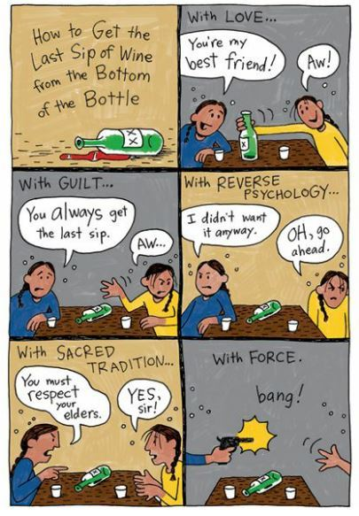
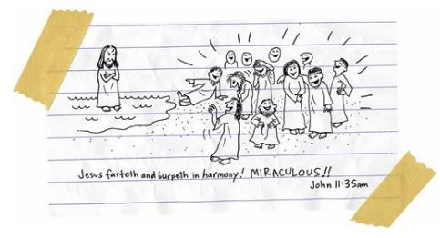
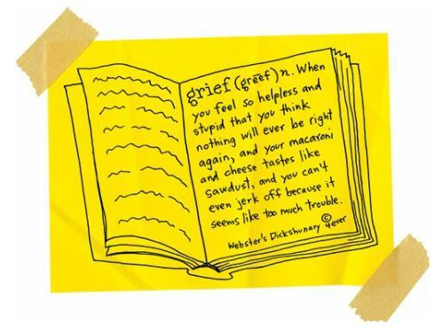
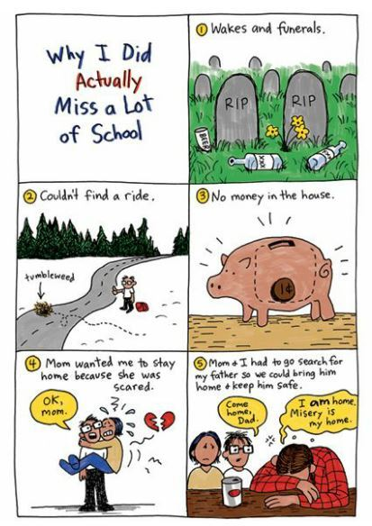

Valentine Heart
A few days after I gave Penelope a homemade Valentine (and she said she forgot it was Valentine’s Day), my dad’s best friend, Eugene, was shot in the face in the parking lot of a 7-Eleven in Spokane.
Way drunk, Eugene was shot and killed by one of his good friends, Bobby, who was too drunk to even remember pulling the trigger.
The police think Eugene and Bobby fought over the last drink in a bottle of wine:

When Bobby was sober enough to realize what he’d done, he could only call Eugene’s name over and over, as if that would somehow bring him back.
A few weeks later, in jail, Bobby hung himself with a bedsheet.
We didn’t even have enough time to forgive him.
He punished himself for his sins.
My father went on a legendary drinking binge.
My mother went to church every single day.
It was all booze and God, booze and God, booze and God.
We’d lost my grandmother and Eugene. How much loss were we supposed to endure?
I felt helpless and stupid.
I needed books.
I wanted books.
And I drew and drew and drew cartoons.
I was mad at God; I was mad at Jesus. They were mocking me, so I mocked them:

I hoped I could find more cartoons that would help me. And I hoped I could find stories that would help me.
So I looked up the word “grief” in the dictionary.
I wanted to find out everything I could about grief. I wanted to know why my family had been given so much to grieve about.
And then I discovered the answer:

Okay, so it was Gordy who showed me a book written by the guy who knew the answer.
It was Euripides, this Greek writer from the fifth century BC.
A way-old dude.
In one of his plays, Medea says, “What greater grief than the loss of one’s native land?”
I read that and thought, “Well, of course, man. We Indians have LOST EVERYTHING. We lost our native land, we lost our languages, we lost our songs and dances. We lost each other. We only know how to lose and be lost.”
But it’s more than that, too.
I mean, the thing is, Medea was so distraught by the world, and felt so betrayed, that she murdered her own kids.
She thought the world was that joyless.
And, after Eugene’s funeral, I agreed with her. I could have easily killed myself, killed my mother and father, killed the birds, killed the trees, and killed the oxygen in the air.
More than anything, I wanted to kill God.
I was joyless.
I mean, I can’t even tell you how I found the strength to get up every morning. And yet, every morning, I did get up and go to school.
Well, no, that’s not exactly true.
I was so depressed that I thought about dropping out of Reardan.
I thought about going back to Wellpinit.
I blamed myself for all of the deaths.
I had cursed my family. I had left the tribe, and had broken something inside all of us, and I was now being punished for that.
No, my family was being punished.
I was healthy and alive.
Then, after my fifteenth or twentieth missed day of school, I sat in my social studies classroom with Mrs. Jeremy.
Mrs. Jeremy was an old bird who’d taught at Reardan for thirty-five years.

I slumped into her class and sat in the back of the room.
“Oh, class,” she said. “We have a special guest today. It’s Arnold Spirit. I didn’t realize you still went to this school, Mr. Spirit.”
The classroom was quiet. They all knew my family had been living inside a grief-storm. And had this teacher just mocked me for that?
“What did you just say?” I asked her.
“You really shouldn’t be missing class this much,” she said.
If I’d been stronger, I would have stood up to her. I would have called her names. I would have walked across the room and slapped her.
But I was too broken.
Instead, it was Gordy who defended me.
He stood with his textbook and dropped it.
Whomp!
He looked so strong. He looked like a warrior. He was protecting me like Rowdy used to protect me. Of course, Rowdy would have thrown the book at the teacher and then punched her.
Gordy showed a lot of courage in standing up to a teacher like that. And his courage inspired the others.
Penelope stood and dropped her textbook.
And then Roger stood and dropped his textbook.
Whomp!
Then the other basketball players did the same.
Whomp! Whomp! Whomp! Whomp!
And Mrs. Jeremy flinched each and every time, as if she’d been kicked in the crotch.
Whomp! Whomp! Whomp! Whomp!
Then all of my classmates walked out of the room.
A spontaneous demonstration.
Of course, I probably should have walked out with them. It would have been more poetic. It would have made more sense. Or perhaps my friends should have realized that they shouldn’t have left behind the FRICKING REASON FOR THEIR PROTEST!
And that thought just cracked me up.
It was like my friends had walked over the backs of baby seals in order to get to the beach where they could protest against the slaughter of baby seals.
Okay, so maybe it wasn’t that bad.
But it was sure funny.
“What are you laughing at?” Mrs. Jeremy asked me.
“I used to think the world was broken down by tribes,” I said. “By black and white. By Indian and white. But I know that isn’t true. The world is only broken into two tribes: The people who are assholes and the people who are not.”
I walked out of the classroom and felt like dancing and singing.
It all gave me hope. It gave me a little bit of joy.
And I kept trying to find the little pieces of joy in my life. That’s the only way I managed to make it through all of that death and change. I made a list of the people who had given me the most joy in my life:
1. Rowdy
2. My mother
3. My father
4. My grandmother
5. Eugene
6. Coach
7. Roger
8. Gordy
9. Penelope, even if she only partially loves me
I made a list of the musicians who had played the most joyous music:
1. Patsy Cline, my mother’s favorite
2. Hank Williams, my father’s favorite
3. Jimi Hendrix, my grandmother’s favorite
4. Guns N’ Roses, my big sister’s favorite
5. White Stripes, my favorite
I made a list of my favorite foods:
1. pizza
2. chocolate pudding
3. peanut butter and jelly sandwiches
4. banana cream pie
5. fried chicken
6. mac & cheese
7. hamburgers
8. french fries
9. grapes
I made a list of my favorite books:
1. The Grapes of Wrath
2. Catcher in the Rye
3. Fat Kid Rules the World
4. Tangerine
5. Feed
6. Catalyst
7. Invisible Man
8. Fools Crow
9. Jar of Fools
I made a list of my favorite basketball players:
1. Dwayne Wade
2. Shane Battier
3. Steve Nash
4. Ray Allen
5. Adam Morrison
6. Julius Erving
7. Kareem Abdul-Jabbar
8. George Gervin
9. Mugsy Bogues
I kept making list after list of the things that made me feel joy. And I kept drawing cartoons of the things that made me angry. I keep writing and rewriting, drawing and redrawing, and rethinking and revising and reediting. It became my grieving ceremony.